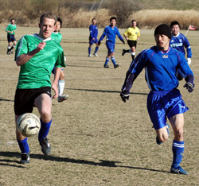

|
Misato, Sun 5th February. Sunday saw a record turn out for the Knights (15 players and 3 very cold supporters) on a blustery day in Misato hoping to see our season high, one game winning streak, extended further.
The match started off with KGFC keeping the ball on the ground, which allowed them to keep control for long periods of time. They had a few chances but they were all thwarted by the stellar keeping of Mr. Mignon and a couple of clearances from his stoic defenders. The Knights while not exactly controlling the game still had a few probing runs but were hard pressed to find any touch around the goal. To cut a long story short, first half score line nil-nil.
As the second half was about to begin, the wind gods must have been angered as the blustery day turned down right nasty. KGFC continued to pile on the pressure and it finally paid off with a penalty awarded for a handball in the box. The penalty was struck off the bar and chaos ensued for the following minute as clearances were pumped right back at the goal until a diving Taylor pushed the ball out for a corner.
With about 15 mins left a KGFC striker was fouled just outside the area setting up a beautifully timed free kick that rode a wave of wind into the top right corner. This seemed to wake up the Knights as we started pressing for the equalizer with some great work down both flanks. Quite a few chances were squandered in the last 10 minutes and with the dreaded final whistle the Knights one game winning streak was finally over. Though the loss was tough the loss of our storied striker Stu Anderson for the remainder of the season who is off to Bali will be felt for seconds and minutes to come.
Report - DJ.
|